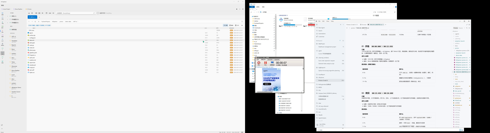
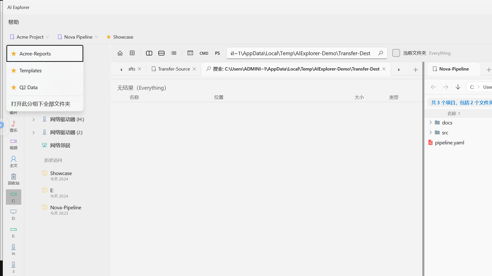
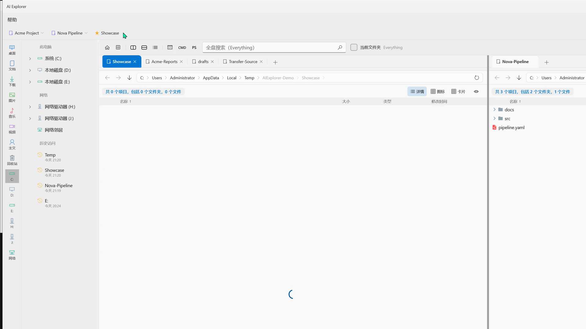
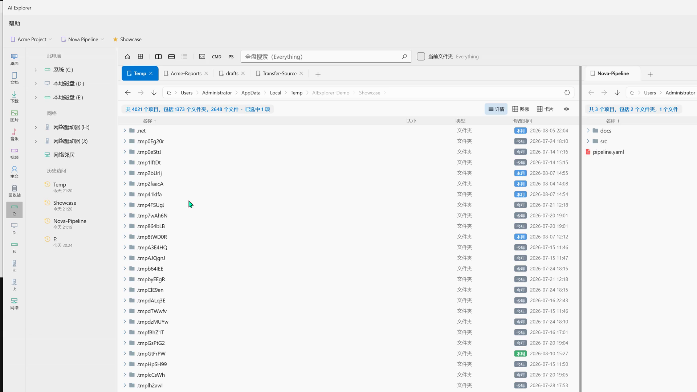
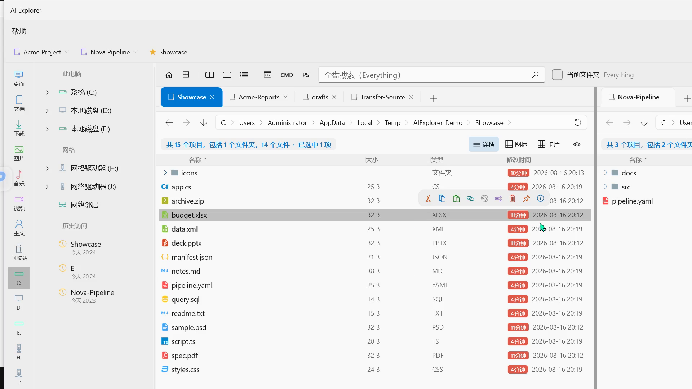
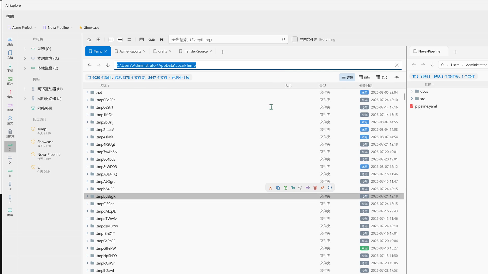

把文件管理，做成生产力。
开始试用
基于 WinUI 打造。颜色层次分明，各类型文件都有精美后缀图标，左侧快捷盘符一键直达。
十兆、百兆、上千兆放进队列。右下角收起展开任务面板，进度和历史随时可查。

点开分组，打开此分组下全部文件夹。开工，不用再找路。

为大屏而生。文件还能置顶、上色、加备注，重要的一眼就能看见。

选中文件出现浮动快捷栏。复制、粘贴、路径、标记置顶，鼠标悬停停一下即可。

Markdown、配置文件直接编辑保存。少开一堆软件。

欢迎试用 AI Explorer，一起把文件管理做回生产力工具。
开始试用商业闭源版本 · 7 天试用 · Windows 10 / 11 x64